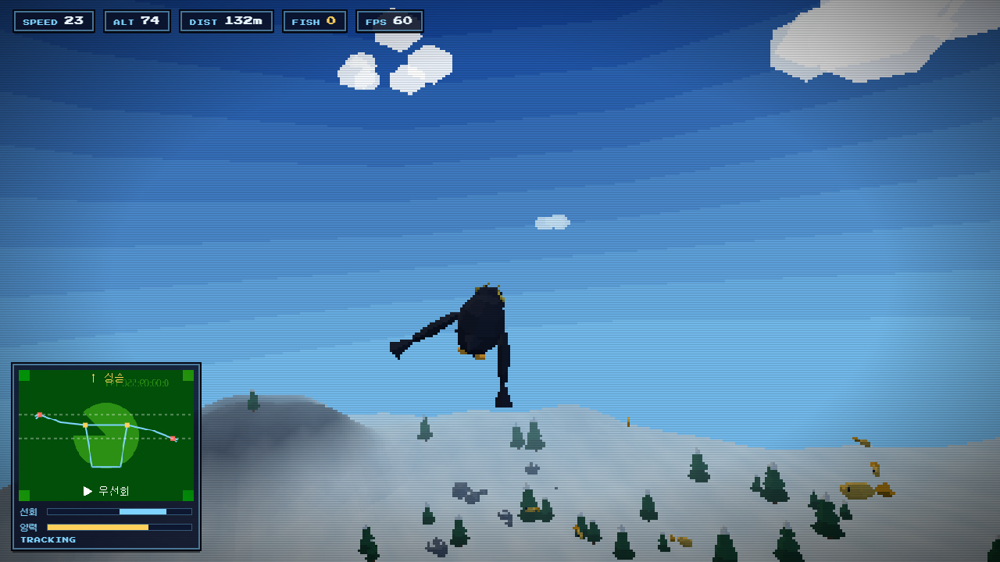
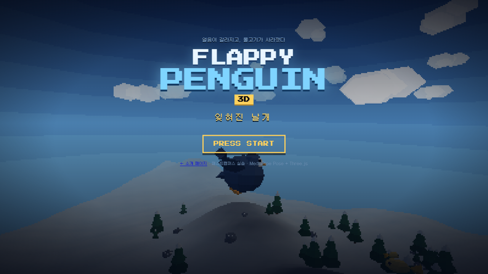
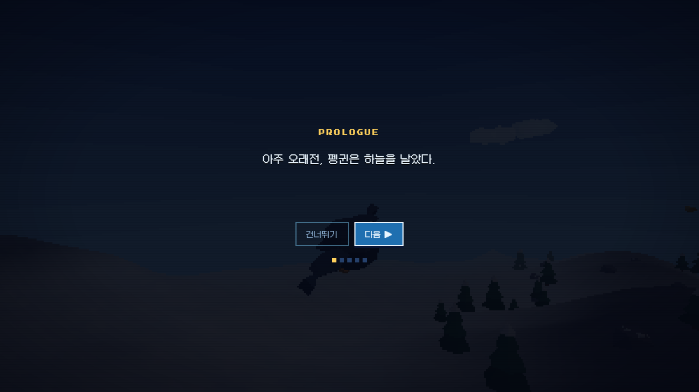
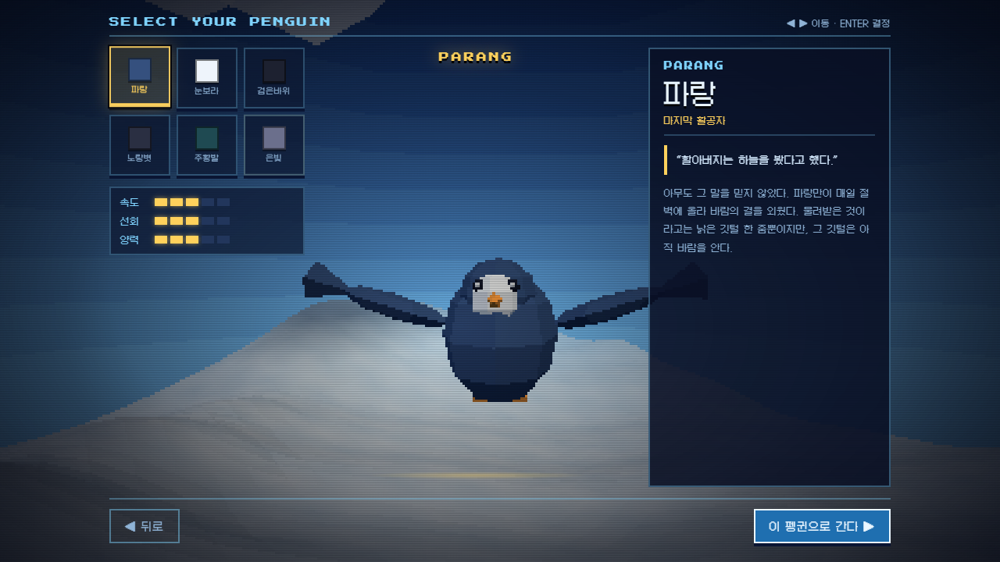
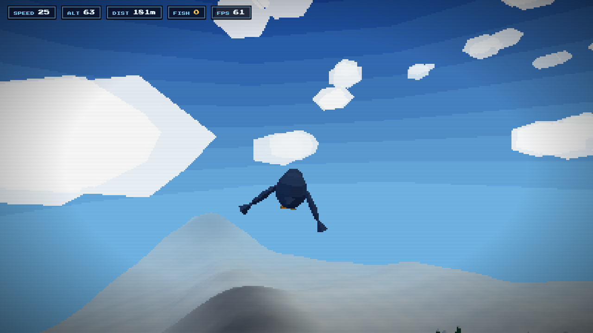

PROLOGUE
게임을 시작하면 다섯 장의 프롤로그가 한 글자씩 찍힌다.
CONTROLS
웹캠 영상에서 어깨와 손목의 위치를 읽어 조종한다. 팔 높이는 어깨 너비와 몸통 길이로 정규화하므로 카메라와의 거리나 체격이 달라도 감도가 유지된다.

SELECT YOUR PENGUIN
색과 생김새만 다른 것이 아니다. 스탯이 속도·선회·양력 상수에 그대로 곱해져 비행 감각이 달라진다. 검은바위는 빠르지만 잘 돌지 못하고, 눈보라는 느리지만 가장 높이 오른다.
SCREENS
아래 이미지는 전부 실제 게임을 헤드리스 브라우저로 띄워 자동으로 찍은 것이다.




HOW IT'S MADE
번들러도 프레임워크도 쓰지 않았다. 브라우저가 index.html을 받아
네이티브 ES 모듈로 나머지를 그대로 읽는다. 저장소에 있는 파일이 곧 실행되는 파일이다.
MediaPipe Pose Landmarker 로 33개 관절을 읽고, 어깨·손목만 써서 선회와 날갯짓을 만든다. 날갯짓은 양팔 평균 높이의 진동 속도를 지수이동평균으로 재서 판정한다.
사인 합성 노이즈로 지형 높이를 만들고, 플레이어를 따라 격자를 재중심화한다. 나무·돌·구름·물고기는 오브젝트 풀에서 진행 방향 앞으로 재배치된다.
해상도를 1/3.2로 줄여 렌더하고 CSS 로 픽셀 그대로 확대한다.
플랫셰이딩·짙은 안개·하늘 색 밴딩·스캔라인을 얹었다.
지형 재빌드가 매번 5.8ms 를 먹어 화면이 끊겼다. 법선을 높이 격자에서
직접 유도하도록 바꿔 2.2ms로, 재빌드 빈도도 절반으로 줄였다.
가짜 카메라를 물린 헤드리스 Chrome 으로 getUserMedia부터 비행 물리까지 실제 게임 루프 위에서 검사한다. 이 페이지의 스크린샷도 같은 방식으로 찍는다.
화면이 뒤집히던 오일러 각 문제, 펭귄이 뒤로 날던 모델링 버그, 지면에서 통통 튀던 물리 — 전부 회귀 테스트를 붙여 막아뒀다.